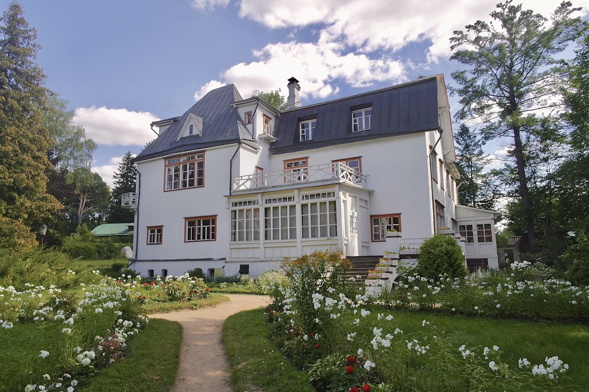
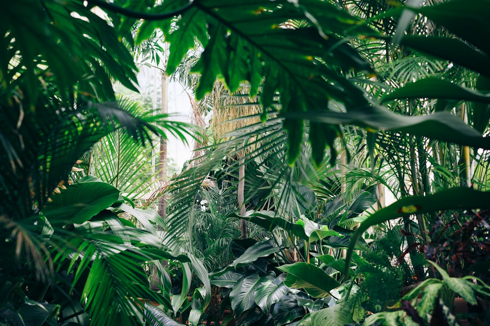

Kertépítés kulcsrakészen
Teljes kertek tervezéstől az átadásig, tereprendezéssel, növénykiültetéssel, kerti utakkal és pihenőterekkel.

Modern előkert, tervezéstől az átadásig

Virágos díszkert, egyedi ültetési terv

Haszonkert magaságyásokkal
Öntözőrendszer telepítés
Okos, időjárás-érzékeny öntözés, amitől a nagy melegben is zöld marad a kert.

Süllyesztett szórófejes rendszer

Zónás öntözés nagy gyepfelületen
Kertfelújítás & rendezés
Elhanyagolt kertekből újra élhető zöld tér, tisztítással, tereprendezéssel és újratervezéssel.
Rendezett haszonkert felújítás után

Benőtt kertből ápolt zöld tér

Talaj-előkészítés, új ültetés
Térkövezés & terasz
Kerti utak, teraszok és burkolt pihenőterek, a kert stílusához illesztve.
Burkolt terasz és pázsit gondozott kertben
Kerti út, tervezett előkert
Sövény & növénykiültetés
Sövények, cserjék, évelők és fák, mindig a megfelelő növény a megfelelő helyre.

Formára nyírt örökzöld sövény
Előnevelt palánták, minőségi növényanyag

Dús, egészséges lombozat
Rendszeres kertgondozás
Éves gondnokság, hogy Önnek ne kelljen a kerttel foglalkoznia.
Rendszeres gondozásban tartott kert
Sövénynyírás, formázás